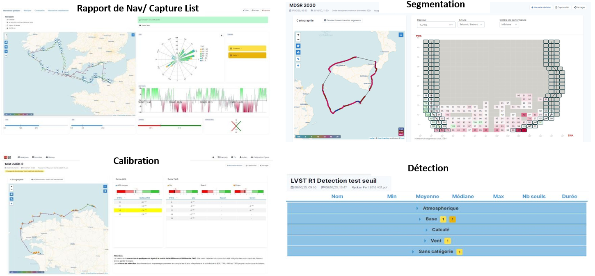
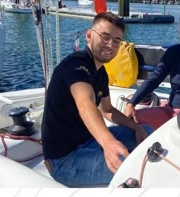
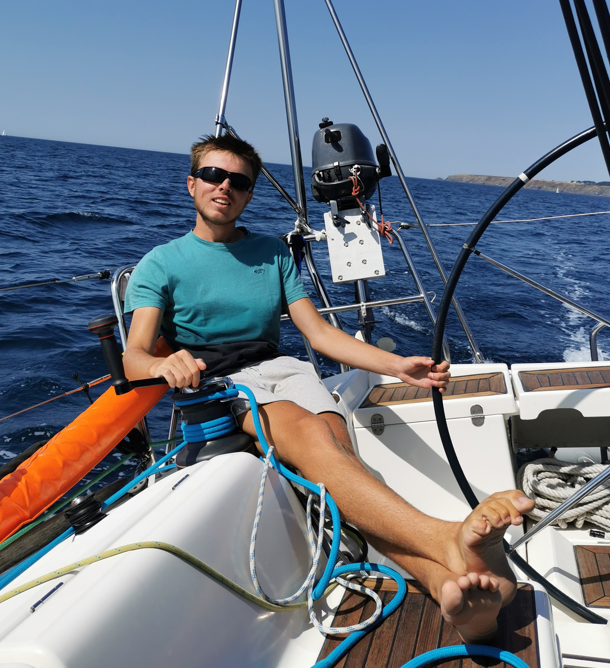
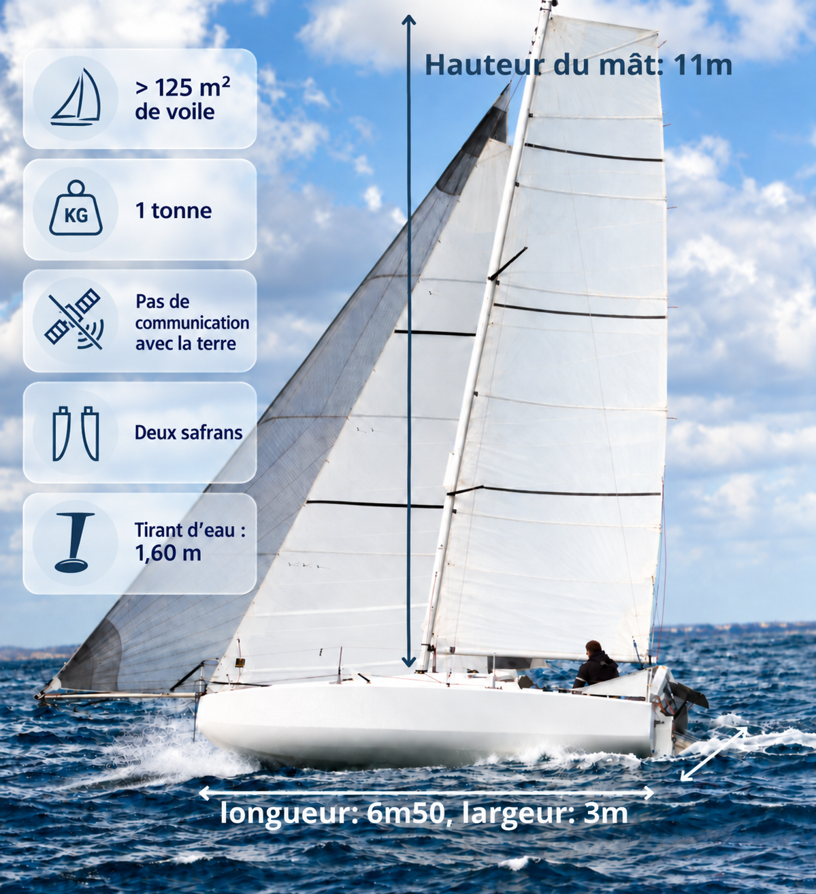
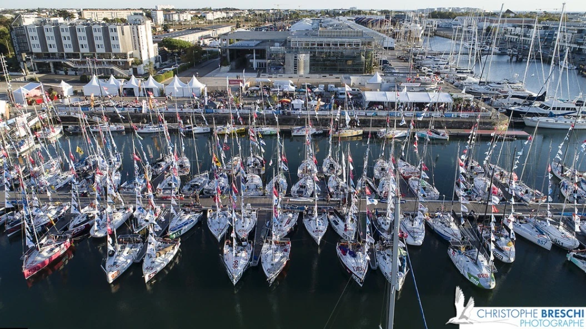
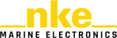

Un défi sportif
Se préparer, naviguer et progresser sur les saisons 2027 à 2031 en gardant le top 10 et la Mini Transat en objectifs.
MTREIZ · CAP SUR LA MINI TRANSAT
Un voilier de 6,50 mètres. L’Atlantique en solitaire.Une aventure qui se construit ensemble.
OBJECTIFS 2029 / 2031
MTREIZ, c’est une aventure sportive, humaine et technique portée par deux frères : Mathieu et Thomas Lechaux.
Depuis 2026, nous naviguons à bord de Kirby, notre Mini 6.50. Nous souhaitons progresser sur le circuit Mini 650 et préparer la Mini Transat. Mathieu participera à l’édition 2029 et Thomas à l’édition 2031.
Mener ce projet à deux est un atout. Cela nous permet d’être plus efficients dans la gestion du projet, la préparation du bateau et les phases d’entraînement.
Rencontrer l’équipeSe préparer, naviguer et progresser sur les saisons 2027 à 2031 en gardant le top 10 et la Mini Transat en objectifs.
Traverser l’Atlantique en solitaire, sans assistance ni moyen de communication avec la terre, sur le plus petit voilier de course au large.
Embarquer nos partenaires dans la préparation, les départs et les courses pour créer, ensemble, une histoire qui s’écrit au large.
INNOVATION · PARTENARIAT TECHNIQUE AVEC nke Marine Electronics
Une partie du projet MTREIZ est dédiée au développement du système de pilotage automatique installé sur Kirby, dans le cadre de notre partenariat technique avec nke Marine Electronics. Cela donne une dimension innovante au projet MTREIZ.
L’idée est de pouvoir tester et valider les derniers développements réalisés par notre bureau d’études.
Mathieu a débuté sa carrière en tant qu’ingénieur R&D chez nke Marine Electronics, où il a notamment travaillé sur l’acquisition et le traitement des données de vent. Nous pourrons travailler sur le vent et le comportement du pilote grâce aux et de performance que nos ingénieurs ont développés. Nous utiliserons l’ensemble des données enregistrées lors des différentes navigations.

Complémentaires sur l’eau comme à terre, nous allions compétences techniques, expérience du large et détermination sportive.
L’Antarctique pour l’un, le Vendée Globe et le cap Horn pour l’autre : nos rêves d’enfants avaient déjà le goût du large. Aujourd’hui, notre complicité et nos métiers d’ingénieurs se rejoignent dans MTREIZ.

La voile me passionne et me fait rêver depuis tout petit. Enfant, j'attendais avec impatience chaque week-end et chaque vacances pour partir sur Andilana, notre bateau familial. À côté de ça, j'étais fasciné par la course au large en solitaire et ces skippers qui s'élançaient défier les océans chaque automne. J'avais rempli ma chambre de posters récoltés lors des nombreux départs de courses auxquels papa nous emmenait, et je m'endormais en m'imaginant à la place de ces marins. Plus grand, j'ai fait mes études d'ingénieur à Brest et ai passé beaucoup de temps sur l'eau et dans l'eau à naviguer, kiter, surfer, et ai développé un réel besoin de proximité avec l'océan. J'ai toujours été compétiteur dans l'âme et animé par ce besoin de performer, d'atteindre des objectifs, que ce soit en course à pied, au badminton ou en VTT. C'est ce qui m'a motivé à me rapprocher du sport de haut niveau et à rejoindre cet univers très fermé de la course au large avec mon métier d'ingénieur en électronique. Grâce à nke Marine Electronics, je travaille aujourd'hui sur ce qui se fait de mieux en termes de voiliers de course et d'électronique de navigation. Le projet MTREIZ est rempli d'ambition, que ce soit en termes de navigation et de compétition, de dépassement personnel, de gestion de projet et de développement électronique, et je pense que c'est cette complexité qui me motive vraiment à réussir ce projet dans sa globalité.

Le projet MTREIZ que nous menons avec Mathieu réunit tout ce que j'aime et qui me définit. J'ai toujours rêvé d'aventure. Lorsque nous partions en bateau étant enfant, j'aimais beaucoup ces moments où nous étions au mouillage le soir et que papa nous racontait son expédition en Antarctique avec toutes les péripéties auxquelles il a dû faire face, le démâtage en arrivant aux Canaries, les orques au large de l'Argentine, les vagues de plus de 10m au Nord de la péninsule Antarctique. Les expéditions en mer comme à terre me fascinent. C'est pourquoi je fais beaucoup de randonnée et de trails, je suis toujours à la recherche de nouveaux défis et d'endroits à découvrir, seul ou avec mes amis. À côté de ça, je suis également un passionné de technique depuis mon plus jeune âge. Je ne marchais pas encore que j'étais déjà assis avec papa et papi à changer une courroie de voiture dans le garage de la maison. Mon cursus d'ingénieur à L'INSA et mon alternance chez Safran m'ont permis de développer de nombreuses connaissances en électronique et complètent mes compétences en mécanique. J'ai toujours aimé mener des projets techniques, je viens de remettre en état une 4L, de la carrosserie en passant par chaque pièce du moteur. Ce qui me plaît techniquement avec le projet MTREIZ, c'est qu'il faut être pluridisciplinaire et savoir tout faire. Il faut pouvoir faire du composite pour travailler sur la structure du bateau, avoir des connaissances en électronique pour le système de pilotage automatique, avoir les bases du matelotage pour savoir réaliser des épissures, être capable de réparer une voile... Je pense que ce projet est une vraie expérience de vie avec les défis techniques, humains et sportifs qui nous attendent, c'est ce qui me motive et j'en sortirai grandi.

MINI 6.50 · VECTOR 650
Kirby appartient à la classe mini 6.50. Il s’agit des plus petits bateaux de course au large. Cette classe de bateaux est connue pour avoir fait émerger des skippers de grande renommée qui participent aujourd’hui aux plus grandes courses, comme le Vendée Globe.
Kirby est un Vector 650 et fait partie des modèles de bateaux les plus performants et modernes en termes de design.
Vous noterez sa forme très arrondie à l’avant qui fait de Kirby un « scow ». Ce choix technique permet à Kirby de surfer dans les vagues sans jamais perdre de vitesse.
Seul à bord d’un voilier de 6,50 mètres, traverser l’Atlantique sans assistance. La Mini Transat est autant un défi sportif qu’une aventure humaine.
Née en 1977, cette course est un laboratoire d’innovation et un tremplin pour les grands noms de la course au large. Elle réunit des marins animés par le même désir : se dépasser, apprendre et aller au bout de leur rêve.
Quitter le golfe de Gascogne, franchir le cap Finisterre et longer le Portugal, avant de rejoindre les Canaries.
Prendre le large vers le Cap-Vert, traverser le Pot au Noir et franchir l’équateur pour rejoindre le Brésil.
Le calendrier détaillé de 2029 reste à confirmer.

À La Rochelle, le village de départ est annoncé au bassin des Chalutiers, au cœur de la ville et à proximité des deux tours. Pontons ouverts au public et aux écoles, rencontres avec les skippers : un lieu pour partager l’aventure avant de quitter la terre.
40 000 visiteurs attendus sur 12 joursUne fréquentation prévisionnelle qui témoigne de l’ampleur de l’événement.
2027 · Les 50 ans de la courseOuverture du village prévue le 1er septembre et départ le 12 septembre 2027.
Tracé indicatif · Fond cartographique : Natural Earth
Deux étapes, des Canaries jusqu’au Brésil.
Sélectionnez une étape pour la découvrir sur la carte.
Des entraînements en Bretagne Sud aux premières lignes de départ, voici notre programme pour 2027.
Chaque rendez-vous est une occasion de progresser à bord de Kirby, de travailler nos réglages et de faire vivre le projet à nos partenaires.
Programme prévisionnel issu de notre plaquette. Les dates précises, les parcours et nos participations seront confirmés au fil de la saison.
Prendre nos repères, préparer Kirby et multiplier les navigations.
Le premier rendez-vous de notre programme de course.
Analyser les navigations et poursuivre le travail sur le bateau.
Un rendez-vous en double pour prolonger la saison ensemble.
Donnons une dimension sportive, humaine et technique à votre engagement.
Visibilité en mer et à terre, rencontres avec vos équipes ou échanges autour de l’électronique embarquée : construisons une aventure qui a du sens pour vous.

Un partenariat avec nke pour partager le projet avec la communauté de l’électronique marine.
Et si vous embarquiez ?Entrer dans l’aventure.
2 000 € HT
Créer une relation privilégiée.
10 000 € HT
Partager le cœur de l’aventure.
30 000 € HT
Une idée de partenariat technique ou un projet particulier ?
Imaginons ensemble la bonne façon de collaborer.
Des premiers bords aux derniers rayons.
Quelques images de notre univers.
Les premières actualités et newsletters seront réunies ici, pour retrouver la préparation de Kirby et les moments forts des courses.
En attendant, rendez-vous sur InstagramUn partenariat, une idée technique ou simplement l’envie d’échanger ? Parlons-en.
mtreiz.mini@gmail.com